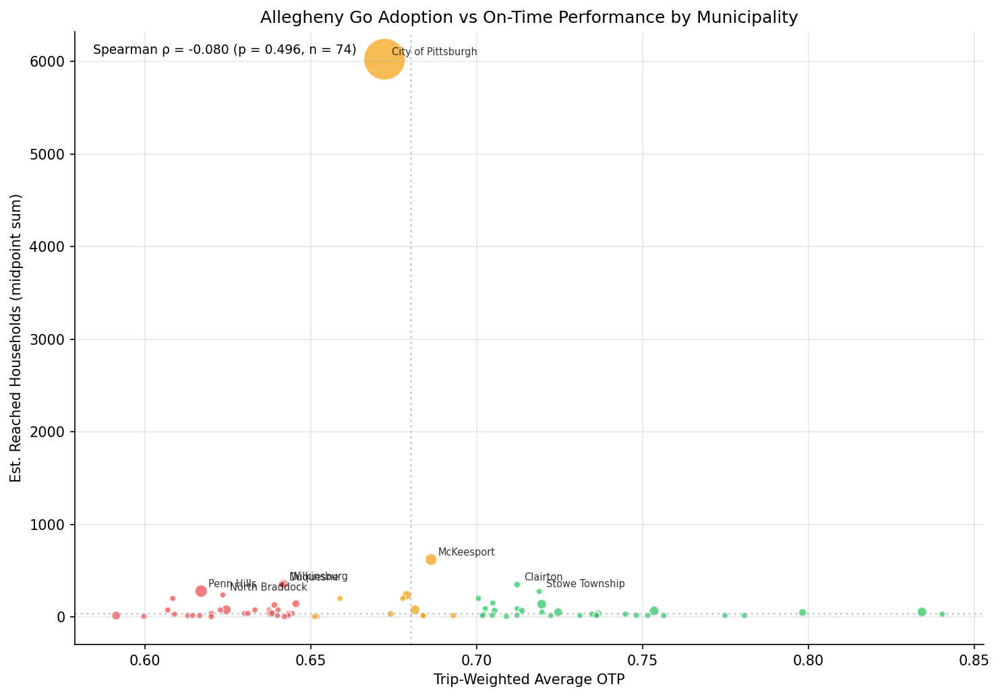
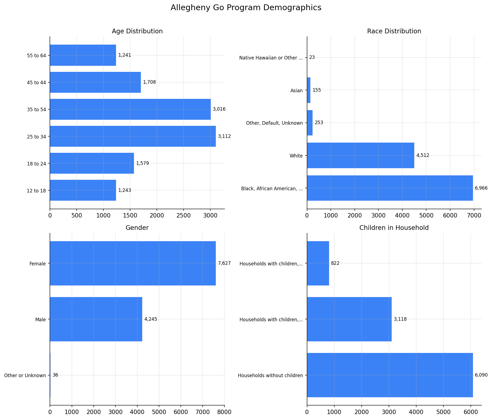

Analysis
42 - Allegheny Go Equity
Coverage: 2019-01 to 2025-11 (from otp_monthly).
Built 2026-05-15 18:56 UTC · Commit 2c8d0c5
Page Navigation
Analysis Navigation
Data Provenance
flowchart LR
42_allegheny_go_equity(["42 - Allegheny Go Equity"])
f1_42_allegheny_go_equity[/"data/allegheny-go/tract_reach.csv"/] --> 42_allegheny_go_equity
f2_42_allegheny_go_equity[/"data/allegheny-go/demographics_summary.csv"/] --> 42_allegheny_go_equity
t_otp_monthly[("otp_monthly")] --> 42_allegheny_go_equity
01_data_ingestion[["Data Ingestion"]] --> t_otp_monthly
u1_01_data_ingestion[/"data/routes_by_month.csv"/] --> 01_data_ingestion
u2_01_data_ingestion[/"data/PRT_Current_Routes_Full_System_de0e48fcbed24ebc8b0d933e47b56682.csv"/] --> 01_data_ingestion
u3_01_data_ingestion[/"data/Transit_stops_(current)_by_route_e040ee029227468ebf9d217402a82fa9.csv"/] --> 01_data_ingestion
u4_01_data_ingestion[/"data/PRT_Stop_Reference_Lookup_Table.csv"/] --> 01_data_ingestion
u5_01_data_ingestion[/"data/average-ridership/12bb84ed-397e-435c-8d1b-8ce543108698.csv"/] --> 01_data_ingestion
t_route_stops[("route_stops")] --> 42_allegheny_go_equity
01_data_ingestion[["Data Ingestion"]] --> t_route_stops
t_stops[("stops")] --> 42_allegheny_go_equity
01_data_ingestion[["Data Ingestion"]] --> t_stops
d1_42_allegheny_go_equity(("polars (lib)")) --> 42_allegheny_go_equity
d2_42_allegheny_go_equity(("scipy (lib)")) --> 42_allegheny_go_equity
classDef page fill:#dbeafe,stroke:#1d4ed8,color:#1e3a8a,stroke-width:2px;
classDef table fill:#ecfeff,stroke:#0e7490,color:#164e63;
classDef dep fill:#fff7ed,stroke:#c2410c,color:#7c2d12,stroke-dasharray: 4 2;
classDef file fill:#eef2ff,stroke:#6366f1,color:#3730a3;
classDef api fill:#f0fdf4,stroke:#16a34a,color:#14532d;
classDef pipeline fill:#f5f3ff,stroke:#7c3aed,color:#4c1d95;
class 42_allegheny_go_equity page;
class t_otp_monthly,t_route_stops,t_stops table;
class d1_42_allegheny_go_equity,d2_42_allegheny_go_equity dep;
class f1_42_allegheny_go_equity,f2_42_allegheny_go_equity,u1_01_data_ingestion,u2_01_data_ingestion,u3_01_data_ingestion,u4_01_data_ingestion,u5_01_data_ingestion file;
class 01_data_ingestion pipeline;
Findings
Findings: Allegheny Go Equity
Summary
There is no statistically significant relationship between municipal on-time performance and Allegheny Go program adoption. The Spearman correlation between trip-weighted OTP and estimated reached households is ρ = −0.080 (p = 0.496, n = 74 municipalities). This result is robust to removing Pittsburgh (ρ = −0.079, p = 0.504).
Key Numbers
- 74 of 99 tract municipalities matched to OTP data (75% match rate)
- Spearman ρ = −0.080 (p = 0.496) — no significant association
- Pittsburgh dominates adoption: 6,025 estimated reached households across 111 census tracts
- Program demographics: 59% Black, 64% female, 26% aged 25–34
- 71% of rides taken by participants who have enrolled
Observations
- Pittsburgh dominates the data. With 111 of 326 tracts and an estimated 6,025 reached households, Pittsburgh is a massive outlier. Even removing it does not change the null result.
- Adoption appears driven by population density and program outreach, not by transit service quality. Municipalities with large low-income populations (Pittsburgh, McKeesport, Wilkinsburg) have high adoption regardless of OTP.
- Demographics suggest the program reaches its target population. 59% of participants are Black (vs ~13% of Allegheny County), and 64% are female. The age distribution skews younger (25–34 is the largest group at 3,112).
- Municipalities with poor OTP do not have systematically lower adoption. Penn Hills (OTP 0.617, 279 households) and North Braddock (OTP 0.623, 238 households) have high adoption despite poor service. This suggests the program successfully reaches areas with unreliable transit.
Caveats
- Reached-household tiers (1-5, 6-25, etc.) are converted to midpoints for aggregation. The 101-500 tier has a very wide range; results are directionally consistent using ordinal ranks instead.
- 25 tract municipalities had no match in the OTP data, mostly areas without PRT bus service (e.g., Pine Township, Forward Township). These are correctly excluded.
- This is an ecological analysis at the municipality level. Individual-level claims about OTP and program participation cannot be drawn.
- OTP data covers 2019-01 to 2025-11, while adoption data is a snapshot; the temporal mismatch could mask relationships.
Validation
- Data source verified. Tract reach data from Allegheny Go Tableau dashboard; OTP aggregation uses the same pattern as Analysis 15.
- Geographic scope matches. Both datasets cover Allegheny County municipalities.
- Null handling. Tracts with "Unpopulated Areas" and "%null%" municipalities filtered out before joining.
- Aggregates sanity-checked. Total midpoint households (~12,000) is consistent with the ~11,900 enrolled participants reported in program demographics.
- Surprising result investigated. The null correlation was checked with and without Pittsburgh, and with ordinal vs midpoint encoding. The null holds across all specifications.
Output

Scatter plot of program adoption vs on-time performance by municipality.

Program demographics overview (age, race, gender, children).
No interactive outputs declared.
Per-municipality OTP and Allegheny Go adoption metrics.
Preview CSV
Methods
Methods: Allegheny Go Equity
Question
Do municipalities with poor on-time performance have higher or lower Allegheny Go fare-program adoption? If low-income residents disproportionately live in areas with unreliable bus service, the program's benefits may be undercut by poor service quality.
Approach
- Load tract-level Allegheny Go adoption data (
tract_reach.csv), which reports reached households per census tract in five tiers (1-5, 6-25, 26-50, 51-100, 101-500). Convert tiers to numeric midpoints for aggregation. - Aggregate adoption to municipality level (sum of midpoint households, count of tracts).
- Compute municipality-level trip-weighted OTP from
route_stops,stops, andotp_monthly, following the same pre-aggregation pattern as Analysis 15. - Join adoption and OTP on normalized municipality name.
- Compute Spearman rank correlation between municipal adoption and OTP. Run with and without Pittsburgh as a robustness check.
- Summarize program demographics as context.
Data
| Name | Description | Source |
|---|---|---|
tract_reach.csv |
Census-tract-level Allegheny Go enrollment reach | data/allegheny-go/ |
demographics_summary.csv |
Program demographics by age/race/gender/children | data/allegheny-go/ |
stops |
Municipality for each stop | prt.db table |
route_stops |
Links routes to stops with trip counts | prt.db table |
otp_monthly |
Monthly OTP per route | prt.db table |
Output
Source Code
|
Sources
| Name | Type | Why It Matters | Owner | Freshness | Caveat |
|---|---|---|---|---|---|
| data/allegheny-go/tract_reach.csv | file | Allegheny Go households reached per census tract. | Local project data owner not specified. | Snapshot file; refresh by rerunning its pipeline step. | May lag upstream source updates. |
| data/allegheny-go/demographics_summary.csv | file | Allegheny Go enrollee demographic summary. | Local project data owner not specified. | Snapshot file; refresh by rerunning its pipeline step. | May lag upstream source updates. |
| otp_monthly | table | Primary analytical table used in this page's computations. | Produced by Data Ingestion. | Updated when the producing pipeline step is rerun. | Coverage depends on upstream source availability and ETL assumptions. |
Upstream sources (5)
|
|||||
| route_stops | table | Primary analytical table used in this page's computations. | Produced by Data Ingestion. | Updated when the producing pipeline step is rerun. | Coverage depends on upstream source availability and ETL assumptions. |
Upstream sources (5)
|
|||||
| stops | table | Primary analytical table used in this page's computations. | Produced by Data Ingestion. | Updated when the producing pipeline step is rerun. | Coverage depends on upstream source availability and ETL assumptions. |
Upstream sources (5)
|
|||||
| polars | dependency | Runtime dependency required for this page's pipeline or analysis code. | Open-source Python ecosystem maintainers. | Version pinned by project environment until dependency updates are applied. | Library updates may change behavior or defaults. |
| scipy | dependency | Runtime dependency required for this page's pipeline or analysis code. | Open-source Python ecosystem maintainers. | Version pinned by project environment until dependency updates are applied. | Library updates may change behavior or defaults. |